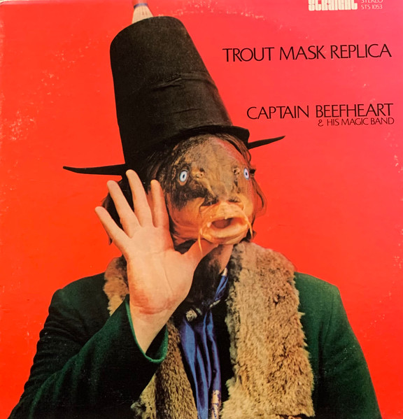
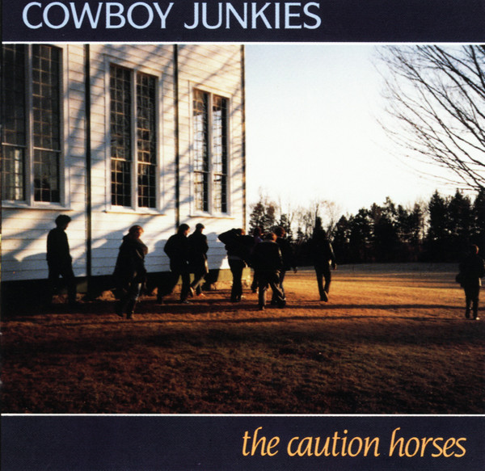
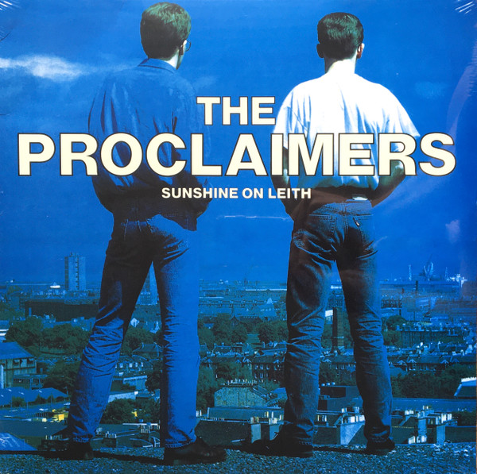
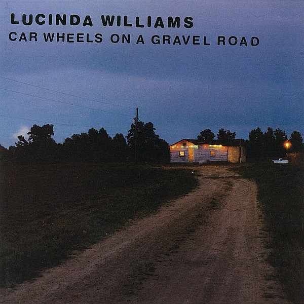
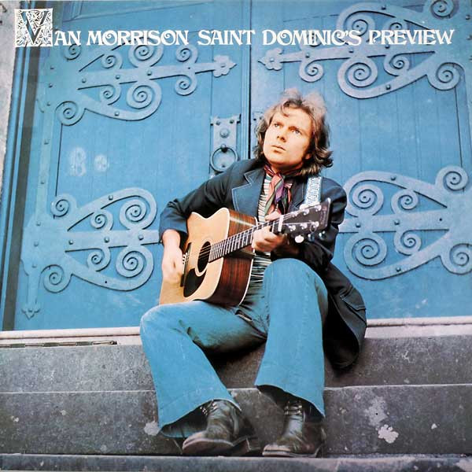
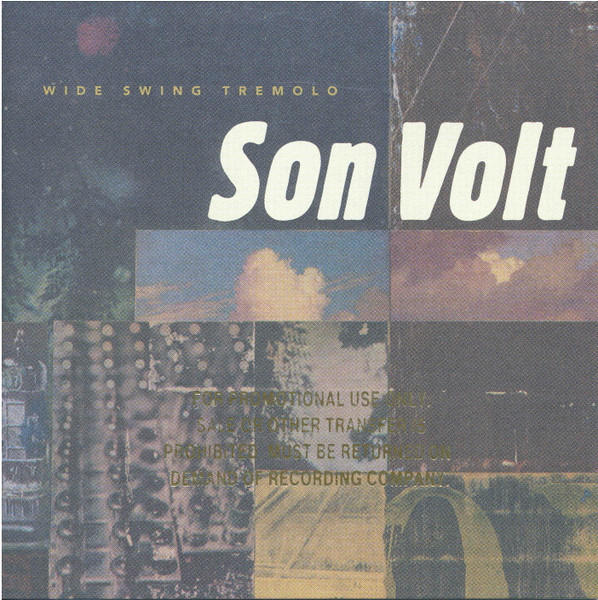
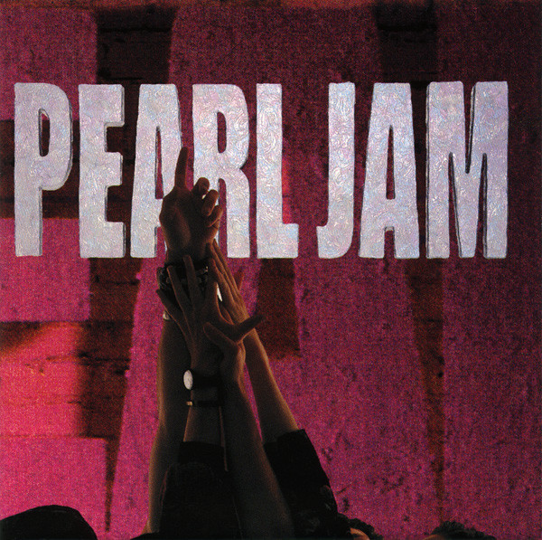
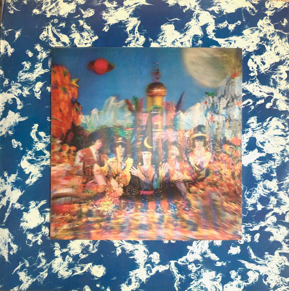
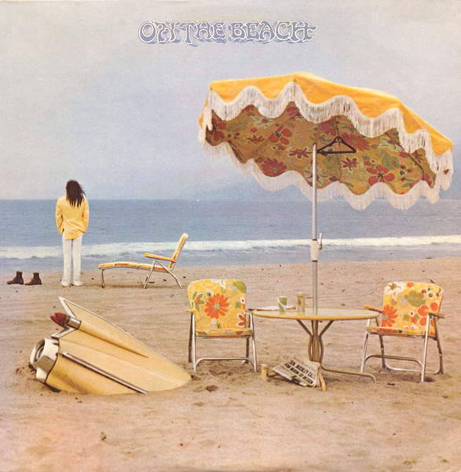
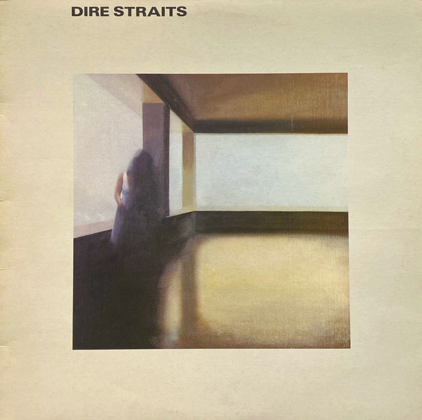

Ten albums that have remained companions through decades of listening
These are not necessarily the greatest albums ever recorded, nor are they meant as an objective ranking. They are simply recordings that have travelled with me through different periods of life and continue to reward repeated listening.
Some challenged my musical horizons, others became trusted companions on the road, and several are forever associated with memories, places and people.

Trout Mask Replica (1969)
One of the most original and challenging recordings in popular music. A unique album that reveals new details with every listening.

The Caution Horses (1990)
Atmospheric, understated and deeply evocative. Music for late evenings and long reflections.

Sunshine on Leith (1988)
Scottish storytelling at its very best with warmth, humour and memorable melodies.

Car Wheels on a Gravel Road (1998)
Roots music of extraordinary quality, combining powerful songwriting with emotional honesty.

Saint Dominic's Preview (1972)
A masterpiece of lyrical imagination and musical atmosphere.

Wide Swing Tremolo (1998)
Alternative country at its finest, full of strong songs and memorable performances.

Ten (1991)
One of the defining albums of the early 1990s and still remarkably fresh today.

Their Satanic Majesties Request (1967)
Colourful, ambitious and often underestimated among the Rolling Stones catalogue.

On the Beach (1974)
Melancholy, reflective and deeply personal. One of Neil Young's greatest achievements.

Dire Straits (1978)
Elegant guitar work, timeless songs and one of the finest debut albums in rock music.
The albums presented here are not selected because of sales figures, critical acclaim or historical significance alone. They represent recordings that have remained meaningful through many decades and continue to provide enjoyment long after their first release.
Like chess, music rewards patience and repeated exploration. The albums on this page are among those that have given the greatest rewards over time.